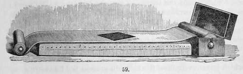
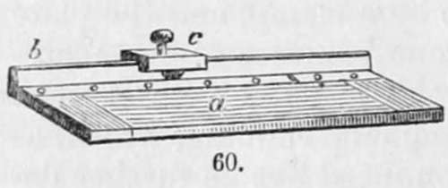

Section II. Polishing The Plate
Description
This section is from the book "A Manual Of Photography", by Robert Hunt. Also available from Amazon: A Manual of Photography.
Section II. Polishing The Plate
Upon this subject but little remains to be added to what is stated in Daguerre's earliest form of manipulation, and the few-remarks just quoted.
It is of the utmost importance that a very perfect mirror surface should be produced, and to ensure the utmost freedom from all organic matter during the polishing; the plate-holder represented in two positions by e e, in Fig. 63, has been devised. The plate-holder is secured to a table by a clamp, and the plate to be polished is fixed upon the horizontal surface of the plate-holder by means of four binding-screws placed at its comers. The plate having undergone the preliminary rubbing, which, as being a comparatively coarse operation, need not be further detailed than it is in the earlier section, and having been fixed on the holder, the last polish is to be given to it. The hand-buff, i, in Fig. 63, is to be dusted over with animal charcoal, and moistened with a little spirits of wine: some operators employ tripoli in a state of impalpable powder mixed with essential oil of lavender. If, however, any essential oil is used, it must be ascertained to be quite free from castor oil,—with which it is very commonly adulterated,—by placing a drop on a piece of paper: if it is a pure essential oil, it will, when warmed, entirely evaporate, but if not, a greasy spot will remain.
In M. Claudet's establishment, where, from long experience, the best modes of manipulation are introduced, the last buffing is effected in a somewhat different manner.
In a box on a roller, to which there is a handle, Fig. 59, is placed a long piece of drab-coloured velvet, which can be drawn out and extended, by means of a second roller, upon the perfectly flat table. The first foot or two, for example, is drawn out: the plate, which has already received its preliminary polishing, is placed face downwards, and being pressed close with the fingers, a rapid circular motion is given to it, and in a few minutes it receives its highest lustre. As the velvet becomes blackened by use it is rolled off, the portion remaining in the box being always perfectly clean, and ready for use. The plate is now ready for receiving its sensitive coating, and, to avoid the chance of the surface touching any other object, M. Claudet adopts the simple but most effective mode of pushing it from the buff into a spherical wooden bowl, in which the plate rests by its four corners in perfect security.
As the edges of the metallic plates are generally sharp, they would often cut the buffs, were that accident not prevented by a suitable precaution. Fig. 60 represents an apparatus called a plate-bender. The surface a is perfectly horizontal, and has a steel border near the bar b: upon the bar b runs a press that carries a steel knife edge so rounded as to be able to bend a plate but not to cut it. The silver plate that is to be buffed is placed on this apparatus with an edge close to the back bar, and the press is then run along it from end to end, by which means the edge of the silver plate is bent downwards in a very slight degree, but sufficient to prevent any cutting action on the buffs. All the four edges of each plate are bent in the same manner.

Continue to:
- prev: Chapter VI. The Daguerreotype. Section I. Daguerre's Improved Manipulation
- Table of Contents
- next: Section III. To Give The Sensitive Surface To The Plate